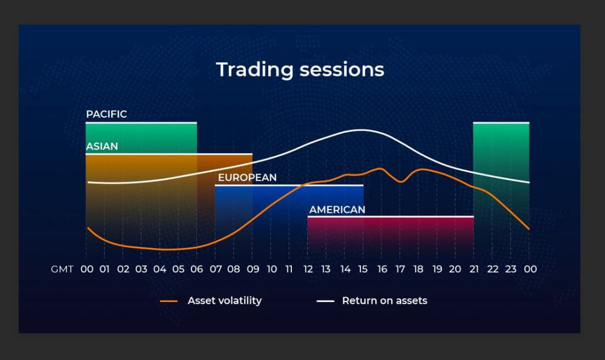

×
Forex Trading Sessions
You can make money trading when the market moves up, and you can even make money when the market moves down.
BUT you will have a very difficult time trying to make money when the market doesn’t move at all.
And believe us, there will be times when the market is as still as the victims of Medusa.
This lesson will help determine when the best times of the day are to trade.

Forex Market Hours
Before looking at the best times to trade, we must look at what a 24-hour day in the forex world looks like.
The forex market can be broken up into four major trading sessions: the Sydney session, the Tokyo session,
the London session, and Trump’s favorite time to tweet (before he was banned),
the New York session.
Historically, the forex market has three peak trading sessions.
Traders often focus on one of the three trading periods, rather than attempt to trade the markets 24 hours per day.
This is known as the “forex 3-session system“.
These sessions consist of the Asian, European,
and North American sessions, which are also called Tokyo, London, and New York sessions.
Some traders prefer to differentiate sessions by names of the continent,
other traders prefer to use the names of the cities.
(We prefer using city names but continents are cool also.)
The International Dateline is where, by tradition, the new calendar day starts.
Since New Zealand is a major financial center,
it is not unusual to see the forex markets open there on Monday morning, while it is still Sunday in most of the world.
Even though trading starts in New Zealand, it’s still called the Sydney session. Makes no sense but we don’t make the rules.
Until Friday, there is no time during the week when the market formally closes,
although there is a brief lull in activity between about 19:00 and
22:00 GMT when most American traders have gone home and most Kiwi and Aussie traders are getting ready for work.
Other than the weekends, there are just two public holidays when the entire forex market is closed, Christmas and New Year’s Day.
Actual open and close times are based on local business hours, with most business hours starting somewhere between 7-9 AM local time.
Daylight Savings Time
Open and close times will also vary during the months of October/November and March/April as some countries
(like the United States, United Kingdom, and Australia) shift to/from daylight savings time (DST).
The day of the month that a country shifts to/from DST also varies, confusing us even more.
And Japan doesn’t observe daylight savings, so thank you Japan for keeping it simple.
Now, you’re probably looking at the Sydney Open and wondering why it shifts two hours in the Eastern Timezone.
You’d think that Sydney’s Open would only move one hour when the U.S.
adjusts for standard time, but remember that when the U.S. shifts one hour back,
Sydney actually moves forward by one hour (seasons are opposite in Australia).
Keep this in mind if you ever plan to trade during that time period.
Dealing with DST is a pain but that’s what happens when a market trades around the clock!
It’s important to remember that the forex market’s opening hours will change in March, April,
October, and November, as countries move to daylight savings on different days.
Trading Session Overlaps
Also take notice that in between each forex trading session,
there is a period of time where two sessions are open at the same time.
For example, during the summer, from 3:00-4:00 AM ET, the Tokyo session and London session overlap
And during both summer and winter from 8:00 AM-12:00 PM ET, the London session and the New York session overlap.
Naturally, these are the busiest times during the trading day because there is more volume when two markets are open at the same time.
This makes sense because, during those times, all the market participants are wheelin’ and dealin’, which means that more money is transferring hands.